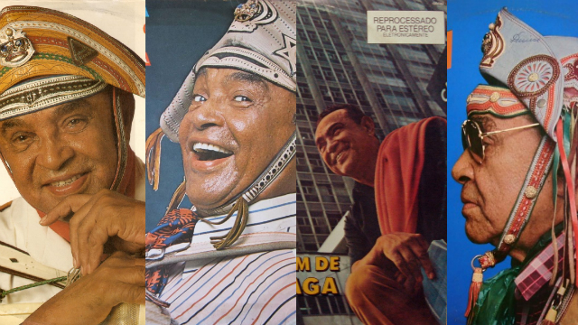

HINO DO SERTÃO
Uma de suas músicas, “Asa Branca” fez tanto sucesso que tornou-se hino do nordeste.Segundo Luiz Gonzaga,
a música nasceu como toada, com raízes folclóricas. Com letra de Humberto Teixeira e música de Luiz
Gonzaga, Asa Branca retrata o sofrimento do povo do Sertão do Nordeste brasileiro diante da seca que
assola a região.

Albuns Impotantes da Carreira (Representação)
PRINCIPAIS OBRAS
Luiz Gonzaga do Nascimento, além de cantor e compositor foi responsável pela valorização dos ritmos
nordestinos, ficou conhecido como o Rei do Baião. Ele cantava acompanhado da sua inseparável sanfona e
levou o baião, o xaxado, o xote e o forró para todo o País.
| ANO DE LANÇAMENTO: |
MÚSICAS/DISCOS: |
| 1947 |
Asa Branca |
| 1996 |
Luar do Sertão
|
|
| 1981 |
A Feira de Caruaru
|
|
| 1997 |
No Meu pé de Serra |
| 1964 |
A Triste Partida |
| 1950 |
Assum Preto |
| 1951 |
Olha Pró Céu |
| 1979 |
Balance Eu |
| 1952 |
Pau de Arara |
| 1998 |
Cintura Fina |
| 1955 |
Riacho do Navio |
| 1953 |
Xote das Meninas |
| 1950 |
No Ceará Não Tem Disso Não |
| 1984 |
Danado de Bom |
| 1985 |
Numa Sala de Reboco |
| 1950 |
Respeita Januário |
| 1984 |
Pagode Russo |
| 1973 |
Último Pau de Arara |
| 1974 |
O Fole Roncou |
| 1972 |
Zé Matuto |
| 1958 |
Dezessete e Setecentos |
| 1945 |
Dança Mariquinha |
| 1950 |
Baião de Dois |
| 1997 |
ABC do Sertão |
| 1952 |
A Morte do Vaqueiro |
| 1981 |
A Vida do Viajante |
| 1941 |
Que nem Jiló |
| 1974 |
Daquele Jeito... |
| 1978 |
Dengo Maior |
| 1988 |
Aí Tem |